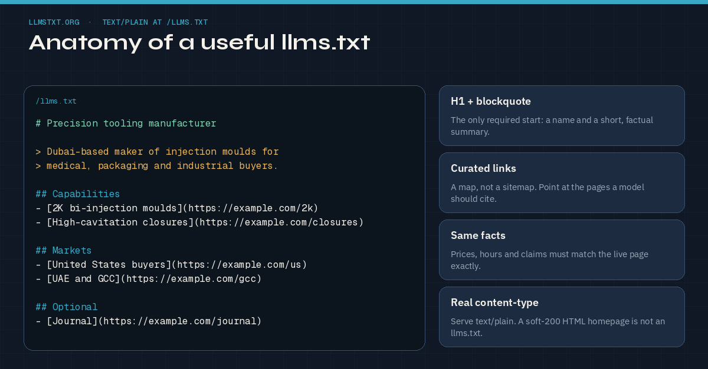
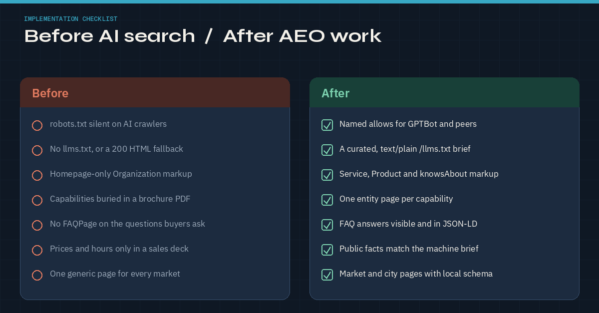

The AEO and GEO pipeline I use so AI engines can cite a business accurately
Search used to mean ten blue links. It still does, and that work has not gone away. Alongside it, buyers now ask ChatGPT, Perplexity, Gemini, Claude and Google AI Overviews to name a supplier, a price, a coverage area or a process. The engines retrieve sources and then write a sentence. If your facts are not retrievable, or they disagree with each other, you are not in that sentence, or you are in it wrongly. I have applied the same pipeline to a precision mould-making company, a diversified UAE plastics manufacturer, and a Dubai home-services platform. The industries differ. The layers do not. This is the method, with generalised snippets rather than client names.

Context
AEO, answer engine optimisation, is the work of making a business easy to retrieve and safe to quote inside an answer. GEO, generative engine optimisation, is the same idea with a slightly wider lens: the content and structure that large language models use when they generate a recommendation. I use both terms because buyers and teams already do. In practice it is one pipeline.
The pipeline has five layers: crawl access, a machine-readable brief, entity pages, structured data, and only then the citation. I will not start at layer five. I have never seen a durable "AI ranking" that was not sitting on the first four.
The problem the pipeline is built to solve
Most sites I audit fail in the same places.
Crawlers that matter are unnamed, or they have been blocked by a copied rule. There is no llms.txt, or the path returns the HTML homepage with a 200 status. The business has one page and a PDF. Schema, if it exists, says WebPage and little else. Prices, hours and coverage sit in a sales deck. Two language versions are planned; hreflang is not. A founder then tells me the company "ranks in all the AI engines", and nobody has a screenshot.
The pipeline is a way to do the work in order, and to be honest about what has been verified.
Layer 1: crawl access
Write robots.txt on purpose. Allow public content to Googlebot, Bingbot, GPTBot, OAI-SearchBot, ChatGPT-User, ClaudeBot, Google-Extended, PerplexityBot, and the other retrieval agents you actually want. Disallow administration, account, payment and tokenised paths. If you need to block a crawler, name it. Add a Sitemap: line that points at a live XML sitemap, and keep that sitemap limited to indexable URLs.
A User-agent: * allow is not enough to relax about. It can be overridden later by a plugin, and it does not document intent. I still use a default allow for humans and ordinary search, then I add the named AI agents so the policy is visible in a review.
Layer 2: the machine-readable brief
Publish /llms.txt as text/plain, following the llmstxt.org shape: an H1, a blockquote summary, then curated H2 sections with linked pages. Optional companion: llms-full.txt for full Markdown, once the short file is right.

The test I use is simple. If I cannot read the file aloud to a new colleague in two minutes and have them understand the business, it is too long or too vague. If a fact in the file cannot be clicked through to a page that says the same thing, it does not belong.
Plugin-generated files are drafts. They often include duplicates, archives and policy pages. Curate them. And never accept a soft 200: if /llms.txt returns HTML, fix the server until the content type is text/plain.
Layer 3: entity pages
Decide the grain of the entity. For a tooling company, that is a process (two-shot moulds, closure tools, medical tools) and a market (US buyers, GCC buyers). For a plastics manufacturer, it is a process, a product family and an industry. For a home-services platform, it is a service, a city, and, where the content can be unique, a service-in-a-city page.
Each entity gets a URL, a title, a meta description, an H1, a short definition a model can quote, and internal links to parent and sibling entities. This is the layer that does most of the work. Schema cannot rescue a site that has nothing to point at.

Layer 4: structured data
Mark up what the page is, in JSON-LD, with the same words as the visible copy.
- The company:
Organization, andLocalBusinesswhen a physical or local service presence is real. - The offer:
ServiceorProduct, withOfferonly for prices you will stand behind. - The questions:
FAQPageon the page that answers them. - The path:
BreadcrumbList,WebSite, andHowTowhen there is a genuine sequence such as a booking flow. - Voice:
SpeakableSpecificationonly on selectors that exist in the HTML.


I do not add types for decoration. An Offer for a price that is only agreed after a site visit is a false statement. A knowsAbout list that does not match real pages is a keyword dump. Broken logo URLs are worse than omitted fields.
Layer 5: citation, checked rather than assumed
Once the first four layers agree, an engine has something it can quote. Whether it does, for which queries, and how often, is an empirical question. I check conventional web search, I read server and Search Console logs when I have them, and I ask the business for screenshots from the assistants they care about. I do not complete a crawl and then announce a ranking.
The same discipline applies to datasets and custom models. If you fine-tune or retrieve over your own catalogue, the training or index store must be built from the same public facts. A private dataset that contradicts the website will eventually surface as a hallucination with your name on it.
Results I can actually verify, across the three sites
The tooling company has a plain-text llms.txt, capability and market pages, Organization, Service and FAQPage markup, and a compact sitemap, and its pages appear in ordinary web search for brand and specialist queries. The plastics manufacturer has a deep catalogue and organisation-level schema, and it appears for brand and category queries; at the time I checked it did not yet serve a real llms.txt, and the leaf pages did not yet carry Service or Product markup. The home-services platform has the fullest stack: named AI-crawler allows, a substantial brief, service and area URLs at scale, and rich schema including LocalBusiness, FAQPage, HowTo and Speakable. Its pages appear in ordinary web search for relevant local queries. I have not independently confirmed citations inside ChatGPT, Perplexity or AI Overviews. The standard is implementation you can inspect, and claims you can evidence.

Lessons
Do the layers in order. A citation strategy without crawl access is a wish.
Make the four public surfaces say the same thing: the page, the brief, the sitemap and the schema.
Prefer a smaller set of true entity pages to a large set of thin ones.
Name AI crawlers explicitly. Implicit allow is fragile.
Do not report AI rankings you have not opened with your own eyes.
Common questions
Is llms.txt officially supported by every major model?
It is a public convention, not a guarantee. Some assistants and some crawlers look for it; others rely on HTML and sitemaps. That uncertainty is why the HTML and the schema have to be complete even if you never write the file. I still write the file, because the cost is low and the briefing value is high.
How is this different from classic SEO?
Most of the floor is classic SEO: crawl, titles, internal links, sitemap, page quality. AEO and GEO add the brief, the entity grain, the answer-shaped FAQ, and a willingness to publish the facts a model will otherwise invent.
Where do datasets and fine-tuning fit?
After the public facts are clean. I will use a site, an llms.txt and a structured catalogue as the source for retrieval or for a small customised model. I will not fine-tune on a messy CMS and hope the model becomes more accurate than its data.